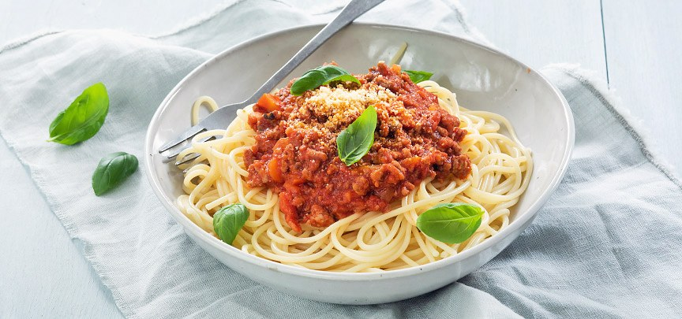

Bolognese

This ultimate pasta recipe is a total classic, delicious, and super-easy to knock together.
- 2 cloves of garlic
- 1 onion
- 2 sprigs of fresh rosemary
- smoked streaky bacon
- olive oil
- 500 g minced beef
- 200 ml red wine
- 1 x 280 g jar of sun-dried tomatoes
- 2 x 400 g tins of plum tomatoes
- 500 g dried spaghetti
- Parmesan cheese
- Preheat the oven to 180C/350F/gas 4
- Peel and finely chop the garlic and onions, pick and finely chop the rosemary, then finely slice the bacon.
- Heat a splash of oil in a casserole pan on a medium heat, add the bacon, rosemary, garlic and onion and cook for 5 minutes, or until softened, stirring occasionally.
- Add the minced beef, breaking it apart with the back of a spoon, then cook for 2 to 3 minutes, or until starting to brown, then pour in the wine. Leave to bubble and cook away.
- Meanwhile, drain and tip the sun-dried tomatoes into a food processor, blitz to a paste, then add to the pan with the tomatoes. Stir well, break the plum tomatoes apart a little.
- Cover with a lid then place in the oven for 1 hour, removing the lid and giving it a stir after 30 minutes – if it looks a little dry at this stage, add a splash of water to help it along.
- About 10 minutes before the time is up, cook the spaghetti in boiling salted water according to the packet instructions.
- Once the spaghetti is cooked, drain, reserving a mugful of cooking water, then return to the pan with a few spoons of Bolognese, a good grating of Parmesan and a drizzle of extra virgin olive oil.
- Toss to coat the spaghetti, loosening with a splash of cooking water, if needed.
- Divide the spaghetti between plates or bowls, add a good spoonful of Bolognese to each, then serve with a fine grating of Parmesan.